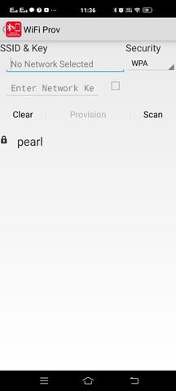

Running the Application
- 1.
Build and program the application project using its respective IDE
- 2.
Open the Terminal application (Ex.:Tera term) on the computer
- 3.
Connect to the "USB to UART" COM port and configure the serial settings as follows:
Baud : 115200
Data : 8 Bits
Parity : None
Stop : 1 Bit
Flow Control : None
- 4.
Download the Microchip Bluetooth Data application from App Store and open it.
- 5.
The WINC3400 device will scan the APs and ready to get paired with Mobile application.

- 6.
In the Mobile Application, Open the "Ble provisioner" widget.

- 7.
In the "Ble provisioner" widget, press the "scan" button. It will list the surrounding BLE devices.
- 8.
The default name given for WINC3400 in the "Wi-Fi provisioning using BLE" application is "Wifi Prov". Click on "Wifi Prov" device.

- 9.
The next screen will display the scanned AP list.
 - 10.
Select the desired AP from the scan list and provide the required credentials to make Wi-Fi connection.
- 11.
Press "Provision" button
- 12.
The mobile application will ask for the password to pair.
- 13.
The password is stored in the "pincode" variable in the "wifi_prov.c" file.
- 14.
Enter the password to pair the WINC3400 device with mobile.

- 15.
The device will connect to the AP and print the IP address obtained.